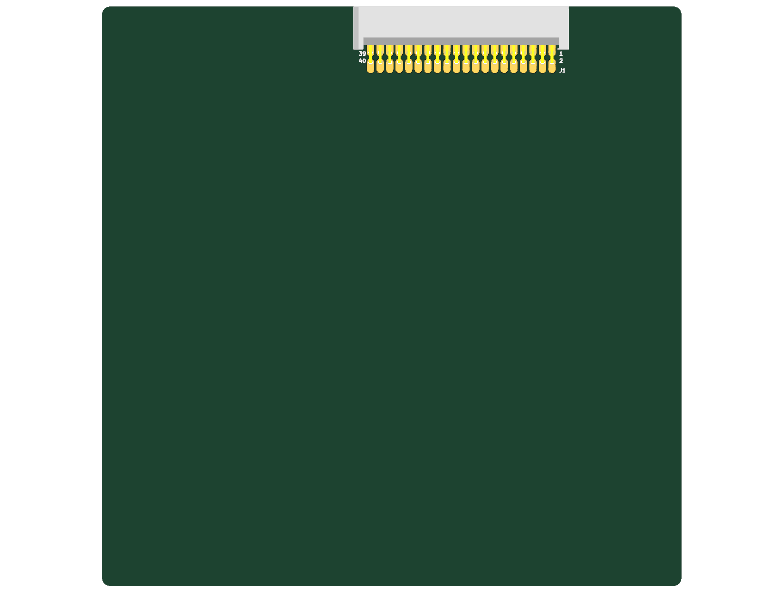

This KiCad project template provides a standardized baseline for developing OSUSat CubeSat expansion cards, test boards, and payload modules compatible with the OSUSat Backplane architecture.
inter_board_connector.kicad_sch) featuring the Samtec TFM-120-X1-XXX-D-RA 40-pin connector (J1).CAN_MAIN_P, CAN_MAIN_N), SPI bus (SPI_SCK, SPI_MOSI, SPI_MISO, SPI_CS), I2C bus (I2C_SCL, I2C_SDA), System Reset, and 8 dedicated power rail lines (RAIL_1_VOUT – RAIL_8_VOUT) plus ground domains.Edge.Cuts), connector placement, mounting references, and 3D CAD STEP model (board.step).sym-lib-table and fp-lib-table pointing to the shared OSUSat library repository (shared/kicad/).Inter-Board-Connector sheet instance to interface your card to the backplane signals.
OSUSat Hardware Engineering © 2026